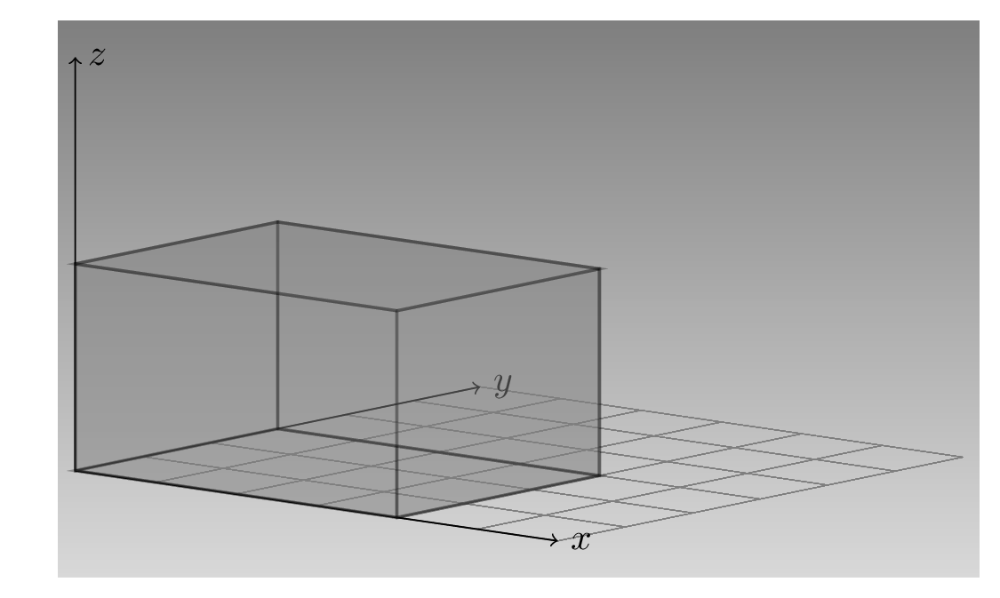

library(torch)
t1 <- torch_tensor(1)
t11 テンソル
1.1 テンソルとは何か
torchで何か役に立つことをするには、テンソルについて知る必要がある。 数学や物理の意味のテンソルではない。 TensorFlowや (Py-)Torchのような深層学習フレームワークでは、 テンソル は「単なる」多次元配列で、CPUだけでなく、GPUやTPUのような専用の装置上での高速計算に最適化されたものだ。
実際、torchのtensorは、Rのarrayに同様に任意の次元を取れる。 Rのarrayとは異なり、高速かつ大規模に計算を実行するために、GPUに移すことができる（おまけに、自動微分ができるので、大変有用だ）。
tensorはR6オブジェクトに類似していて、$によりフィールドやメソッドを利用できる。
これは単一の値1だけを格納したテンソルだ。 CPUに「生息」しており、その型はFloat。 次に波括弧の中の1{1}に着目する。 これはテンソルの値を改めて示したものではない。 これはテンソルの形状、つまりそれが生息する空間と次元の長さである。 Base Rと同様にベクトルは単一の要素だけでもよい （base Rは1とc(1)を区別しないことを思い出してほしい）。
前述の$記法を使って、一つ一つ関連するフィールドを参照することで、個別に以上の属性を確認できる。
t1$dtypet1$devicet1$shapeテンソルの $to() を使うと、メソッドいくつかの属性は直接変更できる。
t2 <- t1$to(dtype = torch_int())
t2$dtype# GPUがある場合
#t2 <- t1$to(device = "GPU")
# Apple Siliconの場合
t2 <- t1$to(device = "mps")
t2$device形状の変更はどのようにするのか。 これは別途扱うに値する話題だが、手始めにいじってみることにする。 値の変更なしに、この1次元の「ベクトルテンソル」を2次元の「行列テンソル」にできる。
t3 <- t1$view(c(1, 1))
t3$shape概念的には、Rで1要素のベクトルや行列を作るのに似ている。
c(1)
matrix(1)テンソルがどのようなものか分かったところで、いくつかのテンソルを作る方法について考えてみる。
1.2 テンソルの作成
既に見たテンソルを作る一つの方法はtorch_tensor()を呼び出し、Rの値を渡すというものだった。 この方法は多次元オブジェクトに適用でき、以下にいくつかの例を示す。
しかし、多くの異なる値を渡す必要があるときは効率が悪くなる。 ありがたいことに、値が全て同一であるべき場合や、明示的なパターンに従うときに適用できる別の方法がある。 この節ではこの技についても説明する。
1.2.1 値からテンソル
前の例では単一要素のベクトルをtorch_tensor()に渡したが、より長いベクトルを同様に渡すことができる。
torch_tensor(1:5)同様に規定のデバイスはCPUだが、最初からGPU/MPSに配置するテンソルを作成することもできる。
#torch_tensor(1:5, device = "cuda")
torch_tensor(1:5, device = "mps")これまで作ってきたのはベクトル。 行列、つまり2次元テンソルはどうやって作るのか。
Rの行列を同様に渡せばよい。
torch_tensor(matrix(1:9, ncol = 9))結果を見てほしい。 1から9までの数字は、列ごとに表示されている。 これは意図通りかもしれないし、そうではないかもしれない。 意図と異なる場合はmatrix()にbyrow = TRUEを渡せばよい。
torch_tensor(matrix(1:9, ncol = 3, byrow = TRUE))高次元のデータはどうするか。 同様の方針に従って、配列を渡すことができる。
torch_tensor(array(1:24, dim = c(4, 3, 2)))この場合でも、結果はRの埋め方に沿ったものとなる。 これが求めるものではないなら、テンソルを構築するプログラムを書いた方が簡単かもしれない。
慌てる前に、その必要が非常に稀であることを考えてみてほしい。 実際は、Rのデータセットからテンソルを作ることがほとんどだ。 「データセットからテンソル」の最後の小節で詳しく確認する。 その前に、少し時間をとって最後の出力を少し吟味しよう。
 {#fig-tensor-432} 私たテンソルは以下のように印字される。
array(1:24, dim = c(4, 3, 2))上のテンソルの印字と比較しよう。 Arrayとtensorは異なる方向にオブジェクトを切っている。 テンソルは値を3x2の上向きと奥に向かう広がる長方形に切り、4つの\(x\)のそれぞれの値に対して一つ示している。 一方、配列はzの値で分割し、二つの奥向きと右向きに進む大きな4x3の部分を示す。
言い換えれば、テンソルは左/「外側」から、配列は右/「内側」から思考を始めているとも言えるだろう。
1.2.2 指定からテンソル
torchの大口生成函数が便利な状況は、おおまかに二つある。 一つは、テンソルの個々の値は気にせず、分布のみに興味がある場合だ。 もう一つは、ある一定のパターンに従う場合だ。
要素の値の代わりに、大口生成函数を使うときは、取るべき形状を指定する。 例えば、3x3のテンソルを生成し、標準正規分部の値で埋める場合は次のようにする。
torch_randn(3, 3)次に示すのは、0と1の間の一様分布に対する同様なもの。
torch_rand(3, 3)全て1や0からなるテンソルが必要となることがよくある。
torch_zeros(2, 5)torch_ones(2, 2)他にも多くの大口生成函数がある。 最後に線型代数で一般的ないくつかの行列を作る方法を見ておく。 これは単位行列。
torch_eye(n = 5)そしてこれは対角行列。
torch_diag(c(1, 2, 3))1.2.3 データセットからテンソル
さて、Rのデータセットからテンソルを作る方法を見ていこう。 データセットよっては、この過程は「自動」であったり、考慮や操作が必要になったりする。
まず、base RについてくるJohnsonJohnsonを試してみる。 これは、Johnson & Johnsonの一株あたりの四半期利益の時系列である。
JohnsonJohnsontorch_tensor()に渡すだけで、魔法のようにほしいものが手に入るだろうか。
torch_tensor(JohnsonJohnson)うまくいっているようだ。 値は希望通り四半期ごとに並んでいる。
魔法？いや、そうではない。 torchができるのは与えられたものに対して動作することだ。 ここでは、与えられたのは実は四半期順に並んだdoubleのベクトル。 データはtsクラスなので、その通りに印字されただけだ。
unclass(JohnsonJohnson)これはうまくいった。 別なものを試そう。
dim(Orange)head(Orange)torch_tensor(Orange)どの型が処理されないのか。 「元凶」は順序付き因子の列Treeに違いないのは明らかだ。 先にtorchが因子を扱えるか確認する。
f <- factor(c("a", "b", "c"), ordered = TRUE)
torch_tensor(f)これは問題なく動作した。 他に何がありうるか。 ここでの問題は含まれている構造data.structureである。 as.matrix()を先に作用させる必要がある。 でも、因子が存在するので、全て文字列の配列になってしまい、希望通りにならない。 したがって、基礎となるレベル（整数）を抽出してから、data.frameから行列に変換する。
orange_ <- Orange |>
transform(Tree = as.numeric(Tree)) |>
as.matrix()
torch_tensor(orange_) |> print(n = 7)同じことを別のdata.frame、modeldataのokcでしてみよう。
Caution
okcはmodeldataの0.1.1で廃止となり、0.1.2以降は削除された。
load("data/okc.RData")
head(okc)dim(okc)二つある整数の列は問題なく、一つある因子の列の扱い方は学んだ。 characterとdateの列はどうだろう。 個別にdateの列からテンソルを作ってみる。
print(torch_tensor(okc$date), n = 7)これはエラーを投げなかったが、何を意味するのか。 こられはRのDateに格納されている実際の値、つまり1970年1月1日からの日数である。 すなわち、技術的には動作する変換だ。 結果が実際に意味をなすかは、どのようにそれを使うつもりかという問題だ。 言い換えれば、おそらく計算に使う前に、これらのデータを追加の処理する必要がある。 どのようにするかは文脈次第。
次にlocationを見る。 これは、character型の列のうちの一つだ。 そのままtorchに渡すとどうなるか。
torch_tensor(okc$location)実際torchには文字列を格納するテンソルはない。 これらをnumeric型に本管する何らかの方法を適用する必要がある。 この例のような場合、個々の観測が単一の実体（例えば文やパラグラフではなく）を含む場合、最も簡単な方法はRでfactorに変換し、numeric、そしてtensorにすることだ。
okc$location |>
factor() |>
as.numeric() |>
torch_tensor() |>
print(n = 7)確かに、技術的にはこれはうまく動作する。 しかしながら、情報が失われる。 例えば、最初と3番目の場所はそれぞれ”south san francisco”と”san francisco”だ。 一度因子に変換されると、これらは意味の上で”san francisco”や他の場所と同じ距離になる。 繰り返しになるが、これが重要かはデータの詳細と目的次第だ。 これが重要なら、例えば、観測をある基準でまとめたり、緯度/経度に変換したりすることを含めさまざまな対応がありうる。 これらの考慮は全くtorchに特有ではないが、ここで述べたのはtorchの「データ統合フロー」に影響するからだ
最後に実際のデータ科学の世界に挑むには、NAを無視するわけにはいかない。 確認しよう。
torch_tensor(c(1, NA, 3))RのNAはNaNに変換された。 これを扱えるだろうか。 いくつかのtorchのかんすうでは可能だ。 例えば、torch_nanquantil()は単にNaNを無視する。
torch_nanquantile(torch_tensor(c(1, NA, 3)), q = 0.5)ただし、ニューラルネットワークを訓練するなら、欠損値を意味のあるように置き換える方法を考える必要があるが、この話題は後回しにする。
1.3 テンソルに対する操作
テンソルに対する数学的操作は全て可能だ。和、差、積など。 これらの操作は（torch_で始まる）函数や（$記法で呼ぶ）オブジェクトに対するメソッドとして利用可能だ。 次の二つは同じだ。
t1 <- torch_tensor(c(1, 2))
t2 <- torch_tensor(c(3, 4))
torch_add(t1, t2)t1$add(t2)どちらも新しいオブジェクトが生成され、t1もt2も変更されない。 オブジェクトをその場で変更する別のメソッドもある。
t1$add_(t2)t1実は、同じパターンは他の演算にも適用される。 アンダスコアが後についているのを見たら、オブジェクトはその場で変号とされる。
当然、科学計算の場面では行列演算は特に重要だ。 二つの一次元構造、つまりベクトルの内積から始める。
t1 <- torch_tensor(1:3)
t2 <- torch_tensor(4:6)
t1$dot(t2)これは動かないはずだと考えただろうか。 テンソルの一つを転置（torch_t()）する必要があっただろうか。 これも動作する。
t1$t()$dot(t2)最初の呼び出しも動いたのは、torchが行ベクトルと列ベクトルを区別しないからだ。 結果として、torch_matmul()を使ってベクトルを行列にかけるときも、ベクトルの向きを心配する必要はない。
t3 <- torch_tensor(matrix(1:12, ncol = 3, byrow = TRUE))
t3$matmul(t1)同じ函数torch_matmul()は二つの行列をかけるときにも使う。 これがtorch_multiply()が行う、引数のスカラとどのように異なるかよく見てほしい。
torch_multiply(t1, t2)テンソル演算は他にも多数あり、勉強の途中、いくつかに出会うことになるか、特に述べておく必要な集まりが一つある。
1.3.1 集計
R行列に対して和を計算する場合、それは次の三つのうちの一つを意味する。 総和、行の和、もしくは列の和。 これら三つを見てみよう（訳あってapply()を使う）。
m <- outer(1:3, 1:6)
sum(m)
apply(m, 1, sum)
apply(m, 2, sum)それではtorchで同じことをする。 総和から始める。
t <- torch_outer(torch_tensor(1:3), torch_tensor(1:6))
t$sum()行と列の和は面白くなる。 dim引数はtorchにどの次元の和をとるか伝える。 dim = 1を渡すと次のようになる。
t$sum(dim = 1)予想外にも列の和になった。 結論を導く前に、dim = 2だとどうなるか。
t$sum(dim = 2)今度は行の和である。 torchの次元の順序を誤解したのだろうか。そうではない。 torchでは、二つの次元があれば行が第一で列が第二である （すぐに示すように、添え字はRで一般的なのと同じで1から始まる）。
むしろ、概念の違いは集計にある。 Rにおける集計は、頭の中にあるものをよく特徴づけている。 行（次元1）ごとに集計して行のまとめを得て、列（次元2）ごとに集計した列のまとめを得る。 torchでは考え方が異なる。 列（次元2）を圧縮して行のまとめを計算し、行（次元1）で列のまとめを得る。
同じ考え方がより高い次元に対しても適用される。 例えば、4人の時系列データを記録しているとする。 二つの特徴量を3回計測する。 再帰型ニューラルネットワーク（詳しくは後ほど）を訓練する場合、測定を次のように並べる。
- 次元1: 個人に亙る。
- 次元2: 時刻に亙る。
- 次元3: 特徴に亙る。
テンソルは次のようになる。
t <- torch_randn(4, 3, 2)
t二つの特徴量についての平均は、対象と時刻に独立で、次元1と2を圧縮する。
t$mean(dim = c(1, 2))一方、特徴量について平均を求めるが、各個人に対するものは次のように計算する。
t$mean(dim = 2)ここで圧縮されたは時刻である。
1.4 テンソルの部分参照
テンソルを使っていると、計算のある部分が入力テンソルの一部にのみに対する演算であることはよくある。 その部分が単一の実体（値、行、列など）なら添字参照、このような実体の範囲なら切り出しと呼ばれる。
1.4.1 「R思考」
添字参照も切り出しも基本的にはRと同じように働く。 いくつかの拡張された記法を続く節で示すが、総じてふるまいは直感に反しない。
なぜならRと同じように、torchでも添字は1から始まるし、1要素になった次元は落とされるからだ。
下の例では、2次元テンソルの最初の行を求め、その結果1次元つまりベクトルを得る。
t <- torch_tensor(matrix(1:9, ncol = 3, byrow = TRUE))
t[1, ]ただし、drop = FALSEを指定すると次元は保持される。
t[1, , drop = FALSE]切り出しの時は、1要素となる次元はないので、他に考慮すべきことはない。
t <- torch_rand(3, 3, 3)
t[1:2, 2:3, c(1, 3)]まとめると、添字参照と切り出しはほぼRと同じように働く。 次に、前に述べた、さらに使いやすくする拡張について見る。
1.4.2 Rを越える
拡張の一つはテンソルの最後の要素の参照だ。 利便性のため、torchでは-1を使ってそれができる。
t <- torch_tensor(matrix(1:4, ncol = 2, byrow = TRUE))
t[-1, -1]注意すべきは、Rでは負の添字はかなり異なった効果を持ち、対応する位置の要素は取り除かれることだ。
もう一つの便利な機能は、切り出しの記法で刻み幅を二つ目のコロンの後に指定できることだ。 ここでは、一つ目から八つ目の列を一つおきに取り出している。
t <- torch_tensor(matrix(1:20, ncol = 10, byrow = TRUE))
t[ , 1:8:2]最後に示すのは、同じコードを異なる次元のテンソルに対して動作させる方法だ。 この場合、..を使って明示的に参照されていない、存在する次元全てをまとめて指定できる。
例えば、行列、配列、もしくは高次元の構造など、どんなテンソルが渡されても最初の次元の添字参照をしたいとする。 次の
t[1, ..]は全てに対して機能する。
t1 <- torch_randn(2, 2)
t2 <- torch_randn(2, 2, 2)
t3 <- torch_randn(2, 2, 2, 2)
t1[1, ..]
t2[1, ..]
t3[1, ..]最後の次元の添字参照がしたければ、代わりにt[.., 1]と書けばよい。 両方を組み合わせることもできる。
t3[1, .., 2]次の話題は、添字参照や切り出しと同じくらい重要なテンソルの変形だ。
1.5 テンソルの変形
24要素のテンソルがあるとする。 形状はどうなっているか。 次の可能性がある。
- 長さ24のベクトル
- 24 x 1、12 x 2、6 x 4などの行列
- 24 x 1 x 1, 12 x 2 x 1などの3次元配列
- その他（24 x 1 x 1 x 1 x 1という可能性もありうる）
値をお手玉しなくても、view()メソッドでテンソルの形状を変更できる。 最初のテンソルは長さ24のベクトルとする。
t <- torch_zeros(24)
print(t, n = 3)同じベクトルを横長の行列に変形する。
t2 <- t$view(c(2, 12))新しいテンソルt2を得たが、興味深いことに（そして性能の上で重要なことに）、torchはその値に対して新たに記憶域を割り付ける必要がなかったことだ。 自分で確認することができる。 二つのテンソルはデータほ同じ場所に格納している。
t$storage()$data_ptr()
t2$storage()$data_ptr()どのように実現されているか少し議論する。
1.5.1 複製なし変形と複製あり変形
torchにテンソルの変形をさせると、テンソルの中身に対して新たな記憶域を割り付けずに要求を達成しようとする。 これが実現可能なのは、同じデータ、究極的には同じバイト列は異なる方法で読み出すことができるからだ。 必要なのはメタデータの記憶域だけだ。
torchはどのようにしているか。 具体的な例を見てみる。 3 x 5行列から始める。
t <- torch_tensor(matrix(1:15, nrow = 3, byrow = TRUE))
tテンソルにはstride()メソッドがあり、各次元に対して次の要素にたどり着くまでにいくつの要素を越えたか追跡する。 上記のテンソルtに対して、次の行に進むには5要素飛ばす必要があるが、次の列には一つだけ飛ばせばよい。
t$stride()ここで、テンソルを変形して、今度は5行3列にする。 データ自体は変化しないことを思い出してほしい。
t2 <- t$view(c(5, 3))
t2今回は次の行には、5要素ではなく3要素だけ飛ばせば次の行に到達する。 次の列に進むのは、ここでも1要素だけ「跳べ」ばよい。
t2$stride()ここで、要素の順序を変えることができるか考えてみよう。 例えば、行列の転置はメタデータの方法で可能だろうか。
t3 <- t$t()
t3元のテンソルとその転置はメモリ上の同じ場所を指しているので、実際に可能であるはずだ。
t$storage()$data_ptr()
t3$storage()$data_ptr()これは道理にかなっている。 次の行に到達するのに、1要素だけ跳び、次の列には5要素跳べばよいから、うまくいくだろう。 確認する。
t3$stride()その通りだ。
可能な限り、torchは形状を変更する演算をこの方法で扱おうとする。
このような（今後多数見ることになる）複製なし演算の一つはsqueeze()とその対義語unsqueeeze()だ。 後者は指定位置に単一要素の次元を付け加え、前者は取り除く。 例を挙げる。
t <- torch_randn(3)
t
t$unsqueeze(1)ここでは単一要素の次元を前につけた。 代わりに、t$unsqueeze(2)を使えば末尾につけることもできた。
さて、複製なしの技法は失敗することがあるか。 そのような例を示す。
t <- torch_randn(3, 3)
t$t()$view(9)ストライドを変える演算を連続して行うと、二つ目は失敗する可能性が高い。 失敗するかどうか決める方法はあるが、簡単な方法はview()の代わりにreshape()を使うことだ。 後者は魔法のように機能し、可能であればメタデータで、そうでなければ複製する。
t <- torch_randn(3, 3)
t2 <- t$t()$reshape(9)
t$storage()$data_ptr()
t2$storage()$data_ptr()想像通り、二つのテンソルは今度は異なる場所に格納されている。
この長い章の終わりに取り上げる内容は、一見手に余るように見える機能だが、性能の上で極めて重要なものである。 多くのもののように、慣れるには時間が掛かるが、安心してほしい。 この本やtorchを使った多くのプロジェクトでたびたび目にすることになる。 この機能 伝播 と呼ばれている。
1.6 伝播
形状が厳密に一致しないテンソルに対する演算をすることが多い。
もちろん、長さ2のベクトルに長さ5のベクトルを足すようなことはしないかもしれない。 でもやってみたいこともありうる。 例えば、全ての要素にスカラを掛けることがあるが、これはできる。
t1 <- torch_randn(3, 5)
t1 * 0.5これはおそらく大したことではなかっただろう。 Rで慣れている。 しかし、次はRでは動作しない。 同じベクトルを行列の全ての行に加えようとしている。
m <- matrix(1:15, ncol = 5, byrow = TRUE)
m2 <- matrix(1:5, ncol = 5, byrown = TRUE)m2をベクトルに代えてもうまくいかない。
m3 <- 1:5
m + m3文法としては動いたが、意味の上では意図した通りではない。
ここで、上の二つをtorchで試してみる。 まず二つのテンソルが2次元の場合（概念的には一つは行ベクトルだが）から。
t <- torch_tensor(m)
t2 <- torch_tensor(m2)
t$shape
t2$shape
t$add(t2)次に足すものが1次元テンソルの場合。
t3 <- torch_tensor(m3)
t3$shape
t$add(t3)torchではどちらも意図通りにうまくいった。 理由を考えてみよう。 上の例でテンソルの形状をあえて印字した。 3 x 5のテンソルには、形状3のテンソルも形状1 x 5のテンソルも足すことができた。 これらは、伝播がどのようにされるか示している。 簡単にいうと、起きたのは次の通りだ。
1 x 5テンソルが加数として使われると、実際は拡張される。 つまり、同じ3行あるかのように扱われる。 このような拡張は一致しない次元が単一で一番左にある場合にのみ実行される。
形状3のテンソルも同様だが、先に手順が追加される。 大きさが1の主要な次元が実質上左に追加される。 これにより1と同様になり、そこから手順が続く。
重要なのは、物理的な拡張はされないことだ。
ルールを系統だてることにする。
1.6.1 伝播のルール
ルールは次の通り。 まず、一つ目は目を引くものではないか、全ての基礎になる。
- テンソルの形状を右に揃える。
二つのテンソル、一つのサイズは3 x 7 x 1、もう一つは1 x 5、があるとする。 これらを右に揃える。
t1, 形状: 3 7 1
t2, 形状: 1 5- 右から始めて、揃えた軸に沿う大きさが厳密に一致するか、一つが1でなければならない。 後者の場合、単一要素次元のテンソルは単一でないものに対して 伝播 される。
上の例では、伝播は各テンソルに1回ずつ2回発生する。 結果は実質的に以下のようになる。
t1, 形状: 3 7 5
t2, 形状: 7 5もしテンソルの一つが一つ（もしくは1以上）余分な軸があれば、実質的に拡張される。
t1, 形状: 3 7 5 t2, 形状: 1 7 5
そして伝播が発生する。
t1, 形状: 3 7 5
t2, 形状: 3 7 5この例では、伝播が両方のテンソルに同時に発生していることを見た。 覚えておくべきことは、常に右から見るということだ。 次の例は、どんな伝播をしてもうまくいかない。
torch_zeros(4, 3, 2, 1)$add(torch_ones(4, 3, 2)) # errorおそらく、この本の中で、この章は最も長く、最も応用から離れたように見えるものだった。 しかし、テンソルに慣れることは、torchをすらすら書くための前提であると言っておく。 同様のことは次の章で扱う話題、自動微分についても言える。 違いは、torchが大変な仕事を我々の代わりにしてくれるということだ。 我々は何をしているか理解すればよいだけだ。